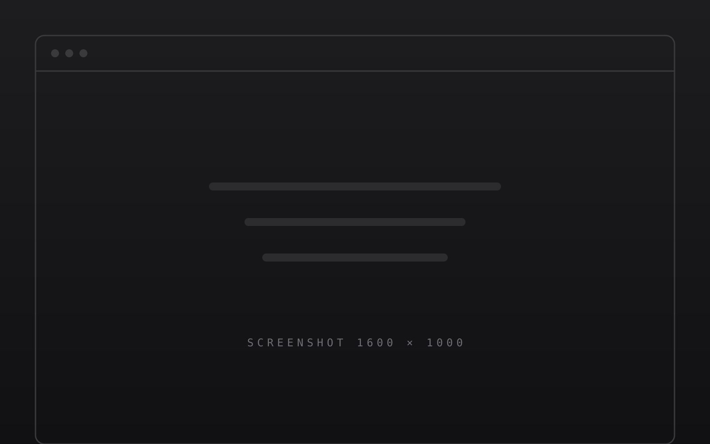
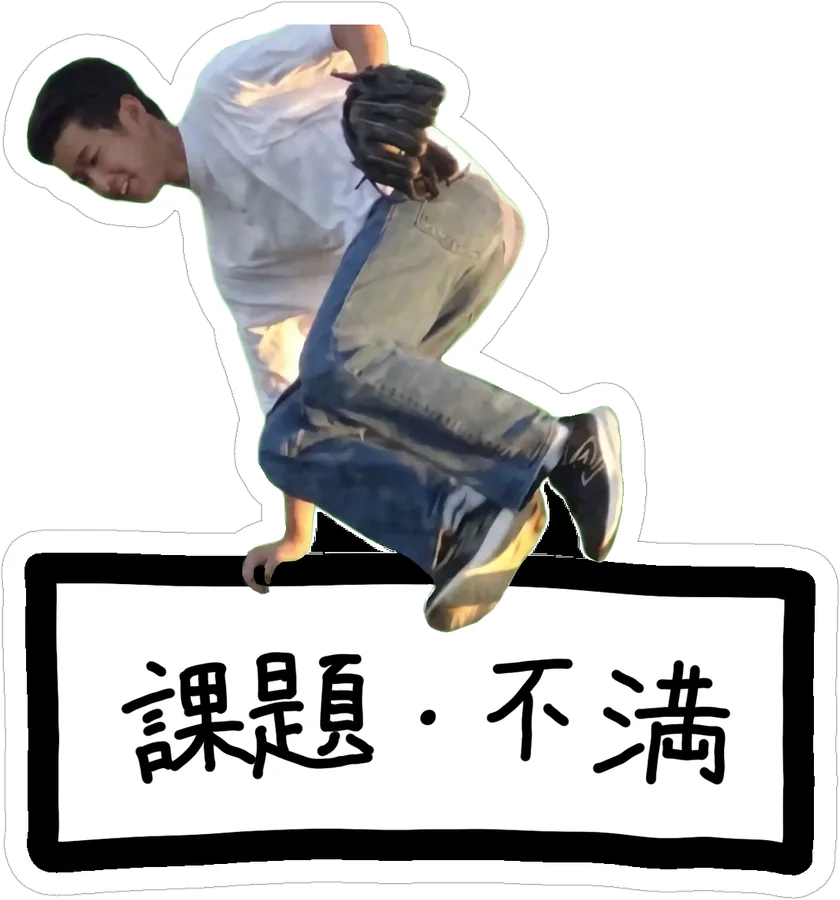
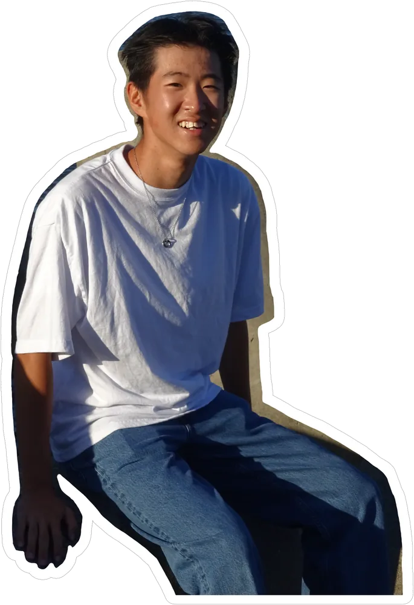
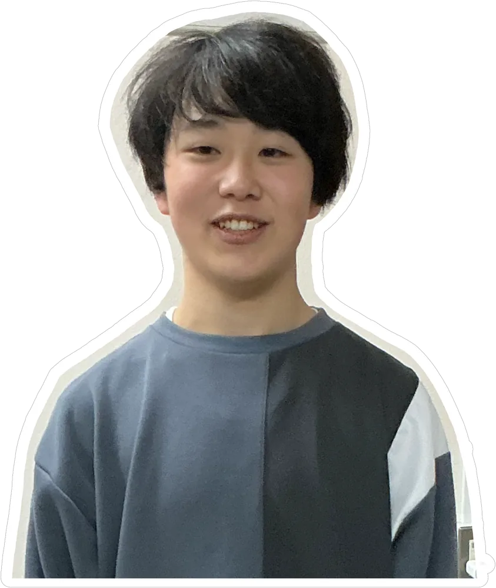

仙台高専の有志団体
常陸・陸奥から 笑顔を届ける。
Let's play!

Jump over it!
イラスト予定
閖上の日の出
閖上の日の出
イラスト予定
仙台高専
仙台高専
Leader

Treasurer
Design

Strategy
私たち
アプリ開発を軸に、
面白いと思ったものを
何でもつくるチームです。
仙台高専の有志団体として活動しています。メンバーは全員がエンジニアです。
大切なこと
私たちの、三つのこと。
-
01
自分が、
最初のユーザー。不満と「面白そう！」から、すべてが始まる。
-
02
全員が、
エンジニア。高専で学んだ技術で、思いついたら形にする。
-
03
エンジニア
万歳な社会へ。つくる人が、いちばん楽しい世界を。
つくるもの
いま、つくっているもの。
メンバー
4人の、エンジニア。
-
代表
上原 貫太
-
会計
安齋 隼
-
デザイン
小林 壮志
-
戦略
結城 敬蔵
団体概要
常奥のこと。
- 名称
- 常奥とわつ / ToWhats
- 形態
- 仙台高専の有志団体
- 所在地
- 宮城県名取市
- 代表
- 上原 貫太
- 活動内容
- アプリの企画・開発